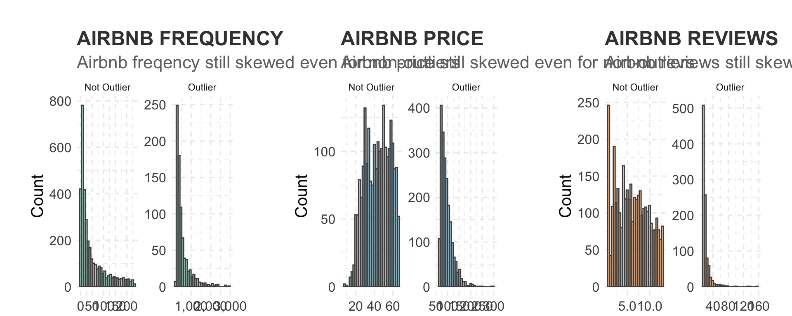
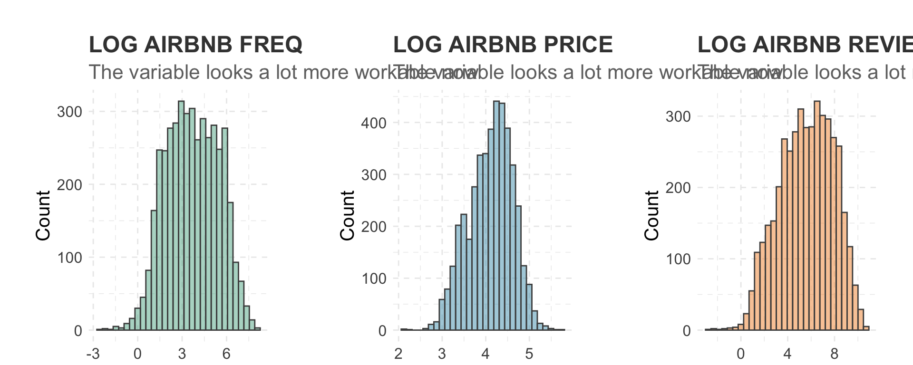
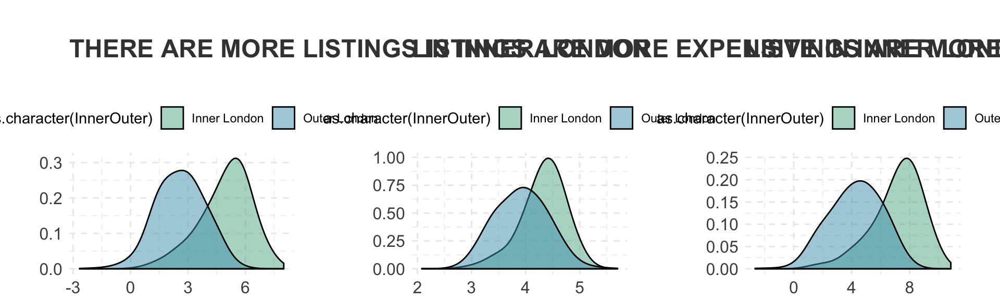
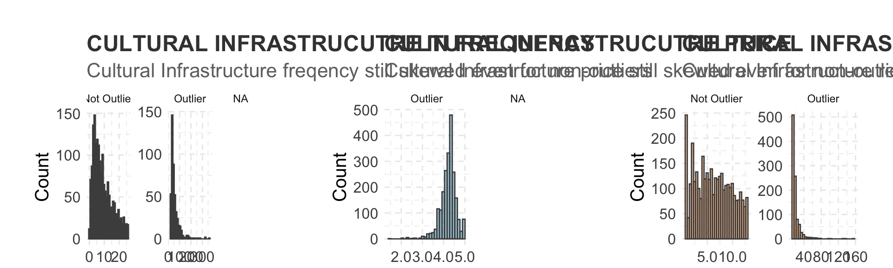
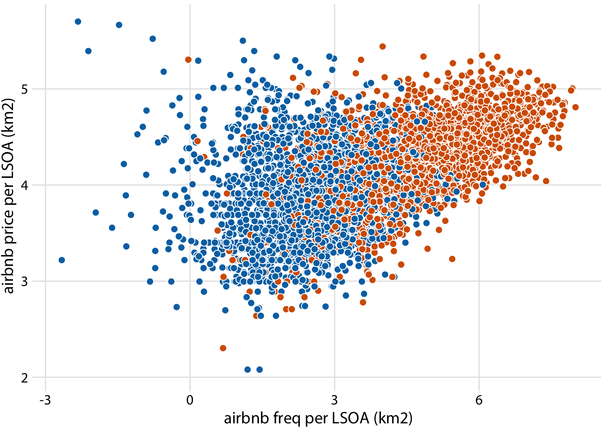
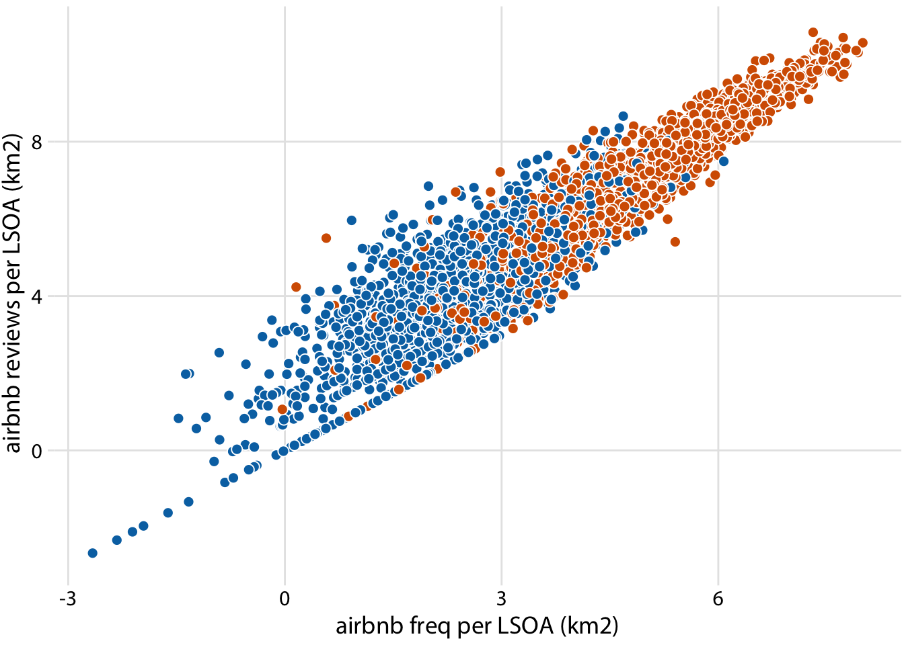

Chapter 4 Exploratory Data Analysis
Having retrieved all the necessary data, we now perform some exploratory data analysis on the variables.
Before doing the EDA, we load in some very useful data visualization libraries used by this book Fundementals of Data Visualization - https://serialmentor.com/dataviz/geospatial-data.html
#----load all the libraries needed
# load in libraries
library(tidyverse)
library(scales)
library(lubridate)
library(ggridges)
library(gridExtra)
#----data visualization packages - https://serialmentor.com/dataviz/geospatial-data.html
#install.packages("remotes")
#install.packages("devtools")
library(remotes)
#install.packages("cowplot")
#devtools::install_github("wilkelab/cowplot")
library(cowplot)
#install.packages("colorspace")
library(colorspace)
#devtools::install_github("clauswilke/colorblindr")
#https://rdrr.io/github/clauswilke/dviz.supp/
#devtools::install_github("clauswilke/dviz.supp")
library(dviz.supp)
options(scipen = 999)Then, we set up some basic settings from this great Kaggle Kernel by X for data visualisation of exploratory data analysis of variables https://www.kaggle.com/jaseziv83/a-deep-dive-eda-into-all-variables/report
#----set the plotting theme baseline
theme_set(theme_minimal() +
theme(axis.title.x = element_text(size = 15, hjust = 1),
axis.title.y = element_text(size = 15),
axis.text.x = element_text(size = 12),
axis.text.y = element_text(size = 12),
panel.grid.major = element_line(linetype = 2),
panel.grid.minor = element_line(linetype = 2),
plot.margin=unit(c(1,1,-0.5,1),"cm"),
plot.title = element_text(size = 18, colour = "grey25", face = "bold"), plot.subtitle = element_text(size = 16, colour = "grey44")))
col_pal <- c("#5EB296", "#4E9EBA", "#F29239", "#C2CE46", "#FF7A7F", "#4D4D4D")4.1 Airbnb EDA
First we do EDA on the Airbnb data
4.1.1 Airbnb freqency distributions
When looking at the distribution of Airbnb listings we see that there are some outliter. After
#----this distribution function was taken from Zivkovic (2019)
outlier <- round(1.5 * IQR(londonLSOAProfiles$airbnb_freq), 0)
plot1 <- londonLSOAProfiles %>%
mutate(outlier = ifelse(airbnb_freq > outlier, "Outlier", "Not Outlier")) %>%
ggplot(aes(x=airbnb_freq)) +
geom_histogram(alpha = 0.5, fill = "#5EB296", colour = "#4D4D4D") +
scale_x_continuous(labels = comma) +
scale_y_continuous(labels = comma) +
ggtitle("AIRBNB FREQUENCY", subtitle = "Airbnb freqency still skewed even for non-outliers") +
labs(x= "Airbnb freq per LSOA", y= "Count") +
facet_wrap(~ outlier, scales = "free")
#----this distribution function was taken from Zivkovic (2019)
outlier <- round(1.5 * IQR(londonLSOAProfiles$airbnb_price), 0)
plot2 <- londonLSOAProfiles %>%
mutate(outlier = ifelse(airbnb_price > outlier, "Outlier", "Not Outlier")) %>%
ggplot(aes(x=airbnb_price)) +
geom_histogram(alpha = 0.5, fill = col_pal[2], colour = "#4D4D4D") +
scale_x_continuous(labels = comma) +
scale_y_continuous(labels = comma) +
ggtitle("AIRBNB PRICE", subtitle = "Airbnb price still skewed even for non-outliers") +
labs(x= "Airbnb price per LSOA", y= "Count") +
facet_wrap(~ outlier, scales = "free")
#----this distribution function was taken from Zivkovic (2019)
outlier <- round(1.5 * IQR(londonLSOAProfiles$airbnb_av_reviews), 0)
plot3 <- londonLSOAProfiles %>%
mutate(outlier = ifelse(airbnb_av_reviews > outlier, "Outlier", "Not Outlier")) %>%
ggplot(aes(x=airbnb_av_reviews)) +
geom_histogram(alpha = 0.5, fill = col_pal[3], colour = "#4D4D4D") +
scale_x_continuous(labels = comma) +
scale_y_continuous(labels = comma) +
ggtitle("AIRBNB REVIEWS", subtitle = "Airbnb reviews still skewed even for non-outliers") +
labs(x= "Airbnb reviews per LSOA", y= "Count") +
facet_wrap(~ outlier, scales = "free")
g <- grid.arrange(plot1, plot2, plot3, ncol=3)
#ggsave("graphs/1.png", plot = g, width = 10, height = 4)4.1.2 Airbnb log freqency distributions
Lets look at the log of Airbnb freqency
#----this log distribution function was taken from Zivkovic (2019)
plot4 <- londonLSOAProfiles %>%
ggplot(aes(x= log(airbnb_freq))) +
geom_histogram(alpha = 0.5, fill = "#5EB296", colour = "#4D4D4D") +
scale_y_continuous(labels = comma) +
ggtitle("LOG AIRBNB FREQ", subtitle = "The variable looks a lot more workable now") +
labs(x= "log(Airbnb Freq)", y= "Count")
#----this log distribution function was taken from Zivkovic (2019)
plot5 <- londonLSOAProfiles %>%
ggplot(aes(x= log(airbnb_price))) +
geom_histogram(alpha = 0.5, fill = col_pal[2], colour = "#4D4D4D") +
scale_y_continuous(labels = comma) +
ggtitle("LOG AIRBNB PRICE", subtitle = "The variable looks a lot more workable now") +
labs(x= "log(Airbnb price)", y= "Count")
#----this log distribution function was taken from Zivkovic (2019)
plot6 <- londonLSOAProfiles %>%
ggplot(aes(x= log(airbnb_no_reviews))) +
geom_histogram(alpha = 0.5, fill = col_pal[3], colour = "#4D4D4D") +
scale_y_continuous(labels = comma) +
ggtitle("LOG AIRBNB REVIEWS", subtitle = "The variable looks a lot more workable now") +
labs(x= "log(Airbnb reviews)", y= "Count")
grid.arrange(plot4, plot5, plot6, ncol=3)
4.1.3 Airbnb Inner vs Outer London
Lets look at Airbnb frequency in Inner vs Outer London
#----this log distribution function was taken from Zivkovic (2019)
plot7 <- londonLSOAProfiles %>%
ggplot(aes(x= log(airbnb_freq), fill = as.character(InnerOuter))) +
geom_density(alpha = 0.5, adjust = 2) +
scale_fill_manual(values = col_pal) +
ggtitle("THERE ARE MORE LISTINGS IN INNER LONDON", subtitle = "") +
labs(x= "log(Airbnb Freq)") +
theme(axis.title.y = element_blank(), legend.position = "top")
#----this log distribution function was taken from Zivkovic (2019)
plot8 <- londonLSOAProfiles %>%
ggplot(aes(x= log(airbnb_price), fill = as.character(InnerOuter))) +
geom_density(alpha = 0.5, adjust = 2) +
scale_fill_manual(values = col_pal) +
ggtitle("LISTINGS ARE MORE EXPENSIVE IN INNER LONDON", subtitle = "") +
labs(x= "log(Airbnb Price)") +
theme(axis.title.y = element_blank(), legend.position = "top")
#----this log distribution function was taken from Zivkovic (2019)
plot9 <- londonLSOAProfiles %>%
ggplot(aes(x= log(airbnb_no_reviews), fill = as.character(InnerOuter))) +
geom_density(alpha = 0.5, adjust = 2) +
scale_fill_manual(values = col_pal) +
ggtitle("LISTINGS ARE MORE EXPENSIVE IN INNER LONDON", subtitle = "") +
labs(x= "log(Airbnb Price)") +
theme(axis.title.y = element_blank(), legend.position = "top")
grid.arrange(plot7, plot8, plot9, ncol=3)
4.2 Cultural infrastructure EDA
Explaination.
4.2.1 Cultural infrastructure venues
#----this distribution function was taken from Zivkovic (2019)
outlier <- round(1.5 * IQR(londonLSOAProfiles$culture_freq, na.rm = TRUE), 0)
plot10 <- londonLSOAProfiles %>%
mutate(outlier = ifelse(culture_freq > outlier, "Outlier", "Not Outlier")) %>%
ggplot(aes(x=culture_freq)) +
geom_histogram(alpha = 0.5, fill = "#5EB296", colour = "#4D4D4D") +
scale_x_continuous(labels = comma) +
scale_y_continuous(labels = comma) +
ggtitle("CULTURAL INFRASTRUCUTRE IN FREQUENCY", subtitle = "Cultural Infrastructure freqency still skewed even for non-outliers") +
labs(x= "Cultural Infrastructure freq per LSOA", y= "Count") +
facet_wrap(~ outlier, scales = "free")
#----this distribution function was taken from Zivkovic (2019)
outlier <- round(1.5 * IQR(londonLSOAProfiles$culture_rating, na.rm = TRUE), 0)
plot11 <- londonLSOAProfiles %>%
mutate(outlier = ifelse(culture_rating > outlier, "Outlier", "Not Outlier")) %>%
ggplot(aes(x=culture_rating)) +
geom_histogram(alpha = 0.5, fill = col_pal[2], colour = "#4D4D4D") +
scale_x_continuous(labels = comma) +
scale_y_continuous(labels = comma) +
ggtitle("CULTURAL INFRASTRUCUTRE PRICE", subtitle = "Cultural Infrastructure price still skewed even for non-outliers") +
labs(x= "Cultural Infrastructure price per LSOA", y= "Count") +
facet_wrap(~ outlier, scales = "free")
#----this distribution function was taken from Zivkovic (2019)
outlier <- round(1.5 * IQR(londonLSOAProfiles$airbnb_av_reviews, na.rm = TRUE), 0)
plot12 <- londonLSOAProfiles %>%
mutate(outlier = ifelse(airbnb_av_reviews > outlier, "Outlier", "Not Outlier")) %>%
ggplot(aes(x=airbnb_av_reviews)) +
geom_histogram(alpha = 0.5, fill = col_pal[3], colour = "#4D4D4D") +
scale_x_continuous(labels = comma) +
scale_y_continuous(labels = comma) +
ggtitle("CULTURAL INFRASTRUCUTRE REVIEWS", subtitle = "Cultural Infrastructure reviews still skewed even for non-outliers") +
labs(x= "Cultural Infrastructure reviews per LSOA", y= "Count") +
facet_wrap(~ outlier, scales = "free")
grid.arrange(plot10, plot11, plot12, ncol=3)## Warning: Removed 2117 rows containing non-finite values (stat_bin).
## Warning: Removed 2117 rows containing non-finite values (stat_bin).
4.2.2 Cultural infrastructure ratings
gather_count <- londonLSOAProfiles %>% gather(culture, culture_density, Archives:Theatres)
#gather_ratings <- londonLSOAProfiles %>% gather(culture, culture_rating, Archives:Theatres)4.2.3 Cultural infrastructure ratings
Correlations
# ggplot(londonLSOAProfiles, aes(log(airbnb_freq), log(airbnb_price))) +
# geom_point(pch = 21, fill = "gray25", color = "white", size = 2.5) +
# scale_x_continuous(name = "airbnb freq per LSOA (km2)") +
# scale_y_continuous(name = "airbnb price per LSOA (km2)") +
# theme_dviz_grid()
ggplot(londonLSOAProfiles, aes(log(airbnb_freq), log(airbnb_price), fill = InnerOuter)) +
geom_point(pch = 21, color = "white", size = 2.5) +
scale_x_continuous(name = "airbnb freq per LSOA (km2)") +
scale_y_continuous(name = "airbnb price per LSOA (km2)") +
scale_fill_manual(
values = c('Inner London' = "#D55E00", 'Outer London' = "#0072B2"),
breaks = c("F", "M"),
labels = c("female birds ", "male birds"),
name = NULL,
guide = guide_legend(
direction = "horizontal",
override.aes = list(size = 3)
)
) +
theme_dviz_grid() +
theme(
#legend.position = c(1, 0.01),
#legend.justification = c(1, 0),
legend.position = "top",
legend.justification = "right",
legend.box.spacing = unit(3.5, "pt"), # distance between legend and plot
legend.text = element_text(vjust = 0.6),
legend.spacing.x = unit(2, "pt"),
legend.background = element_rect(fill = "white", color = NA),
legend.key.width = unit(10, "pt")
)
ggplot(londonLSOAProfiles, aes(log(airbnb_freq), log(airbnb_no_reviews), fill = InnerOuter)) +
geom_point(pch = 21, color = "white", size = 2.5) +
scale_x_continuous(name = "airbnb freq per LSOA (km2)") +
scale_y_continuous(name = "airbnb reviews per LSOA (km2)") +
scale_fill_manual(
values = c('Inner London' = "#D55E00", 'Outer London' = "#0072B2"),
breaks = c("F", "M"),
labels = c("female birds ", "male birds"),
name = NULL,
guide = guide_legend(
direction = "horizontal",
override.aes = list(size = 3)
)
) +
theme_dviz_grid() +
theme(
#legend.position = c(1, 0.01),
#legend.justification = c(1, 0),
legend.position = "top",
legend.justification = "right",
legend.box.spacing = unit(3.5, "pt"), # distance between legend and plot
legend.text = element_text(vjust = 0.6),
legend.spacing.x = unit(2, "pt"),
legend.background = element_rect(fill = "white", color = NA),
legend.key.width = unit(10, "pt")
)